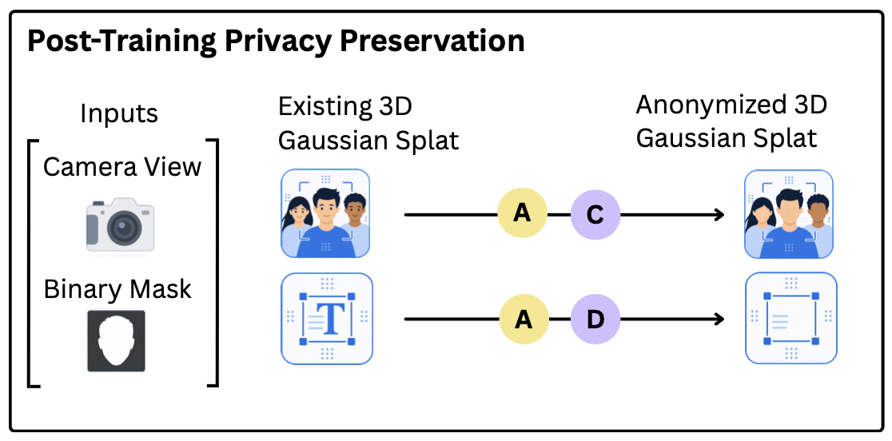
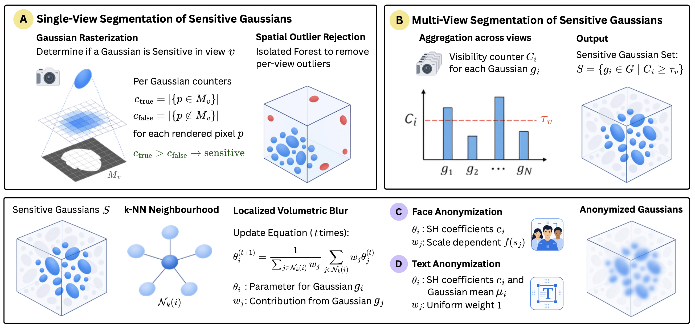
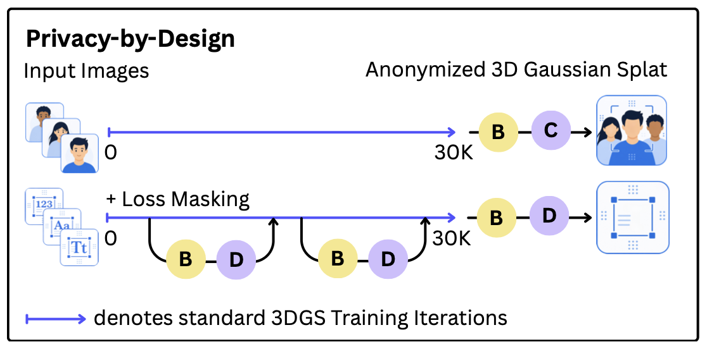
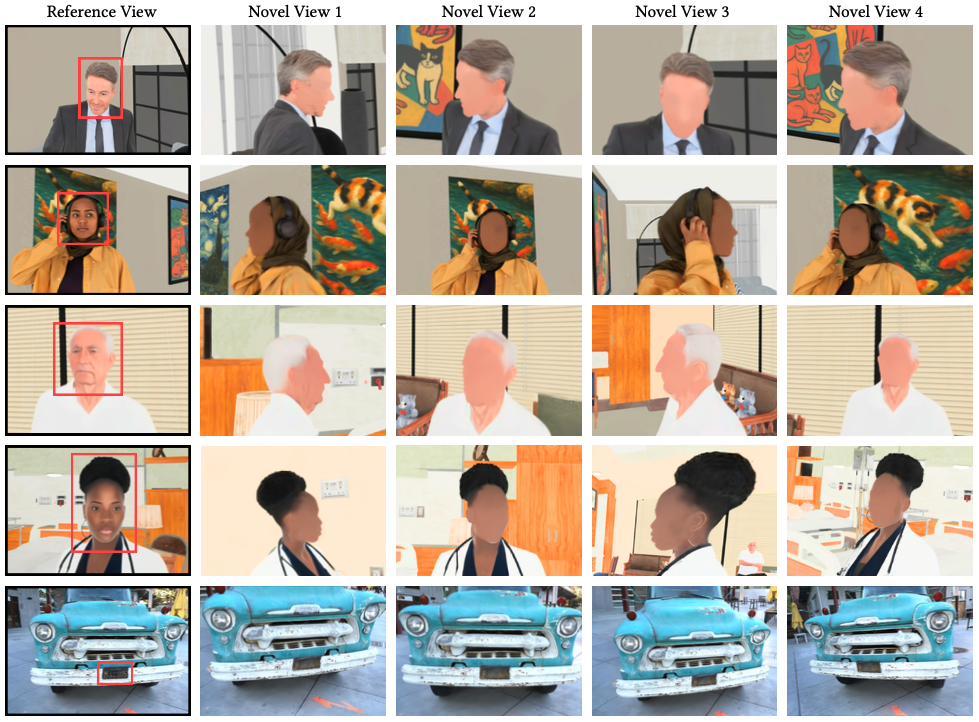

Post-Training Privacy Preservation
Anonymizes an existing 3D Gaussian Splat using a reference camera view and binary mask, without requiring access to the original training images.

3D Gaussian Splatting (3DGS) has rapidly become the preferred representation for high-fidelity novel view synthesis and 3D scene reconstruction. However, the learned representation encodes sensitive visual information including human faces, license plates, documents, and computer screens, raising significant privacy concerns when trained splats are shared or deployed. In this work, we address the underexplored problem of privacy preservation in Gaussian Splatting by proposing a representation-level anonymization framework that directly anonymizes a trained splat.
Given a trained splat and a user-provided reference view identifying sensitive content, our method localizes the corresponding regions in the underlying 3D representation and directly anonymizes them, ensuring that the sensitive information is absent from all subsequently rendered novel views while preserving the overall scene geometry and visual fidelity. We achieve this post-training anonymization in less than 1 second. Furthermore, we extend our framework with a privacy-by-design training strategy that prevents sensitive content from being embedded into the representation during optimization, enabling the generation of privacy-preserving splats directly from training images. Our method achieves a substantial reduction of Face Similarity Measure (FSM) by ~74% as compared to 3DGS, while making sensitive text completely unreadable with an OCR Character Error Rate of 1.00. Our work aims to serves as the primary stepping stone towards privacy-aware 3D representations and motivates further research along these directions.

Anonymizes an existing 3D Gaussian Splat using a reference camera view and binary mask, without requiring access to the original training images.

Integrates anonymization into 3D Gaussian Splatting training, using loss masking and periodic updates to protect sensitive regions as the scene is reconstructed.


Qualitative results on PrinGS-Humans (rows 1-4) and Tanks and Temples (row 5). Given a single reference view, PrinGS anonymizes sensitive facial and textual information directly in the Gaussian representation, consistently protecting privacy across novel viewpoints while preserving scene geometry and facial contours. Best viewed on screen.
Face Similarity Measure (FSM) ↓: Cosine similarity between facial embeddings of the ground truth and anonymized renders. Lower values indicate higher degree of anonymization.
Face Detection Rate (FDR) ↑: Fraction of ground-truth faces that remain detectable in anonymized renders. Higher values indicate that facial geometry is preserved, penalizing facial destruction.
OCR Character Error Rate (CER) ↑: Text readability using character-level edit distance between recognized and ground-truth text. Higher values indicate stronger text anonymization.
| Scene | 3DGS | Ours | ||
|---|---|---|---|---|
| FDR ↑ | FSM ↓ | FDR ↑ | FSM ↓ | |
| House | 91.67 | 78.68 | 36.11 | 6.55 |
| Hospital | 97.50 | 88.55 | 42.50 | 12.70 |
| Overall | 94.74 | 83.87 | 39.47 | 9.79 |
| Method | Truck | Barn | M60 | Piano | Car |
|---|---|---|---|---|---|
| 3DGS | 0.500 | 0.028 | 0.207 | 0.149 | 0.158 |
| Ours | 1.00 | 1.00 | 1.00 | 1.00 | 1.00 |
@InProceedings{PrivacyPreserving3DGS_2026_ICVGIP,
author = {Behera, Gaurav and Raundhal, Abhinav and Panda, Archisha and Balina, Saumya and Shroff, Gargi and Kumaraguru, Ponnurangam},
title = {PrinGS: Privacy Preservation in Gaussian Splatting},
booktitle = {Indian Conference on Computer Vision, Graphics, and Image Processing (ICVGIP 2026)},
year = {2026},
}